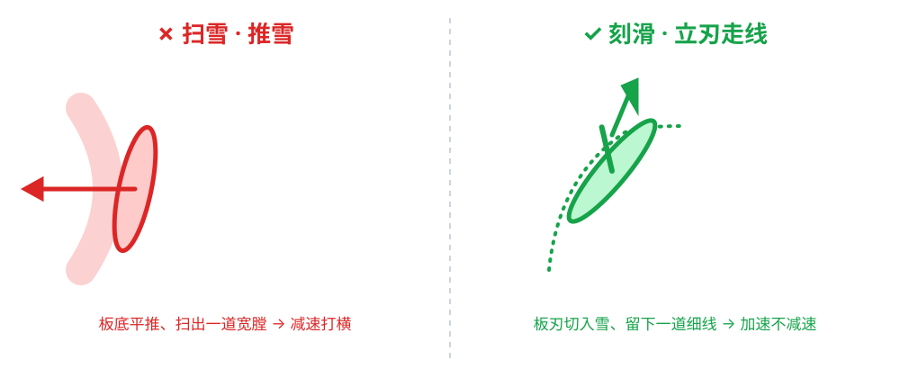

韩式刻滑·刃角控制与压力管理
刻滑韩式刃角压力专项
韩式刻滑：刃角控制与压力管理
本文讲韩式刻滑的两大核心变量：刃角（受刃深度） 与 压力（加压/减压节奏）。术语与底层模型见 术词、四条主轴。
1. 刃角控制（Edge Angle）
概念
- 刃角：板底面与雪面之间的倾角（垂向为 0°）。倾角越大 → 刃吃雪越深 → 弯弧半径越小、压力越大。
- 受刃（Carve）：让板沿刃走，而不是侧滑；这是「刻滑 vs 搓雪」的分界。
万用参考：倾角 ∝ 速度（大致）
- 慢速：浅倾角、可略带滑，渐进寻找刃感。
- 中速：倾角加深、弧收紧，雪的反作用力（上扬）增强。
- 高速：需更大倾角 + 更深压力（→ 见 团身）；否则倾角过头会导致「失压、翻板」或摔。
韩式特色：倾角走得深、快、持续
- 不只在顶点立刃，而是进弯后持续加深倾角并保持到出弯，形成深 }细痕。
- 用重心内侧 + 小腿/膝盖的顺滑站立「顶」刃，而不是猛踩板尾。
教学 cue
- 「让刃立起来切雪面，不是拖着走。」
- 「板像切冰吧，嗡地一声进弯。」
- 「入弯后把刃压深、顶住雪。」
- 自查：每一弯停下回头看雪面——刻痕是"一条细线"还是"一面白"？用这个来判断刃角到位与否，比盯着刃看更可靠。
示意图：雪面刻痕 —— 扫雪（一片白） vs 刻滑（一条细线）

图文可视化｜刃角与压刃后的完整弯

图片来源：Wikimedia Commons（自由授权）· 查看原图
{kind=link}
2. 压力管理（Pressure Management）
概念
压力：通过下压/体移施加在板面的垂直负载，改变受刃与弯型。韩式特别强调压力的时机与持续性。
加压/减压与动作链
对应 core-models 的 PRESS 与 RELEASE：
| 阶段 | 该做的 | 用途 |
|---|---|---|
| 入弯（initiation） | 越过可控点、开始向内侧移 | 不早不晚的入弯 |
| 弯底（够圆弧） | 持续加压，保持压刃 | 收紧弧、深度进刃 |
| 出弯（finish） | 逐渐减负 / 伸展 | 为下一侧换刃蓄力 |
韩式「持久压刃」的精髓
- 不是「点一下」就放，而是把压力稳稳地挂在刃上一段时间，像用手按着弧线走。
- 用 髋的内转 + 上身相对静（counter）长时间维持。
与压力的误区
| 常见错误 | 根因 | 纠正 |
|---|---|---|
| 出弯过晚/舍不得放 | 怕快 | 提前转头看向目标弯内侧，为下一刃让出节奏 |
| 只压不释放 | 没理解加压-减压循环 | 出弯微伸展卸压 |
| 顶峰之前就超载 | 倾角过快 | 渐进加大倾角 |
3. 组合：刃角 × 压力
- 浅倾角 + 低压：滑行/热身
- 中倾角 + 中压：舒适刻滑
- 深倾角 + 高压持压：韩式深弯刻滑（需团身支撑压力，见 compression-extension）
相关
- 基础与发力：基本姿态与发力
- 团身与压缩伸展：compression-extension
- 压力锥度模型：压力管理